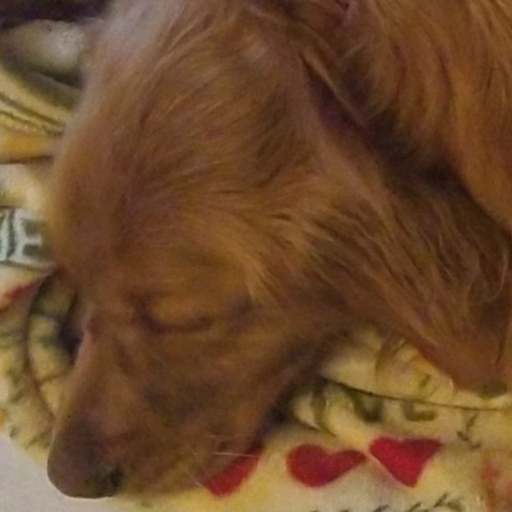
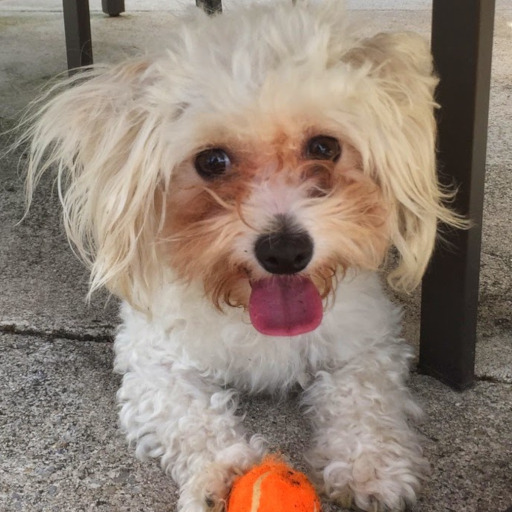
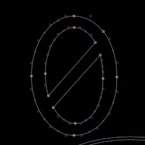
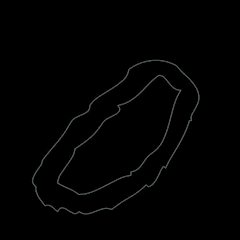
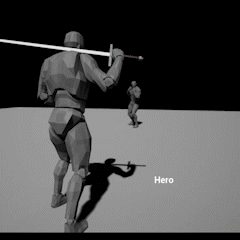

Greetings!
Considering that this website will be hosted on a public repository on Github, expulsion of personal information (educational background, work history, etc.) will be kept to an absolute minimum. This might leave you asking, “Well what is the point of this site then?” Join me below to find out some more information about my four legged friends, as well as current and past software projects.
Look at Me!
I am an aspiring software developer currently living in the greater Philadelphia area. My programming background has primarily been in C/C++ with some exposure to Python and Rust. Most of the time I work on my own, so I look forward to more collaborative opportunities via Thinkful. But perhaps more interestingly, I have two wonderful dogs that are far more entertaining than me. Just look at these buddies!
|  |
Brandy (aka: Big Bud, The Goofy Girl, etc.)This wonderful creature is a three year old Golden Retriever. She is a certified cuddle buddy and will do just about anything to gain the attention of everyone within scratching distance. While Brandy loves to lay outside in the shade on the patio during the summer, she also loves to snuggle up with a blanket during the winter months. |
Daisy (aka: Doodles, Little Buddy, etc.)Don't let her small stature fool you! As an 8 year old Yorkie Bichon Frise mix, this scrappy little friend has the tenacity of dogs 10 times her size and half of her age. Daisy loves to be comfortable and spares no effort to both procure and secure the most comfortable spot in the room. She shares her love for blankets with Brandy begrudgingly. |
 |
Active Projects
DingusSvg
|  |
This project started off as a toy 3d graphics engine using Vulkan, but quickly evolved into an Svg authoring application. The goals is to build the application from scratch ‐ platform presentation and input layers, application UI, file importing and exporting, etc. Currently, there are a number of external libraries in use, simply to bootstrap the initial stages of development; however, they will all be replaced. Currently only three libraries are utilized: Stb, single header library used to read and write image data; OpenGL Mathematics (GLM), for core mathematics data structures and algorithms; GLFW, for quick compatibility between platform windowing and input management. |
|
Thus far only two types of files have been imported TrueType/OpenType font files and basic path based Svg files. All ttf outlines are properly loaded with a stencil buffer based shading method to fill the glyphs. Code points are also properly decoded and a font atlas is being build allowing for work to begin on the UI/UX for the base application. |
 |
Untitled Turn-based RPG
|  |
Inspried by the many classic turn-based RPGs that have come before, this project hopes to capture their spirit and help bring such concepts forward into the modern era. With elements of a rhythm game, player will amass a party of characters that offer a variety of skills and abilities that enable a large number of playstyles. Each combat option has a timing/rhythm component that allows for a higher sense of partisipation in an otherwise passive turn based format. |
|
For this project I wanted to take a less drastic approach to the from scratch mentality currently being explored through DingusSvg and use some excellent tools like Unreal Engine. I have been using Blender for all of my modeling and animation needs. Gimp is being used for more intricate texture work, although the current art direction does not lend itself to much texturing. Some additional footage of older animaitons and the expected flow of combat can be found at the following private video listings: new vs. old animations, melee combat example, mage combat example. |

|
Previous Projects
Tic-toc-toe
You're on the clock with this best of five game of Tic Tac Toe! Place three pieces in a row to win the round -standard Tic Tac Toe rules apply. Every match is the best of five rounds. Don't give up if you have a bad first round. Here are some of the technologies and features of the appication:
- Unreal Engine 4
- Windows and Android
- Local and cross platform LAN multiplayer
- Availble for download.
- Source available upon request.
PngStego
Command line utility that allows for data to be embedded and extracted from PNG image files using a combination of stegonographic methods with minimal degradation of the original image's quality. Extracted data can be stored in a file or displayed directly to the terminal. Here are some of the technologies and features of the appication:
Contact Information
Feel free to message me on any of the following platforms: